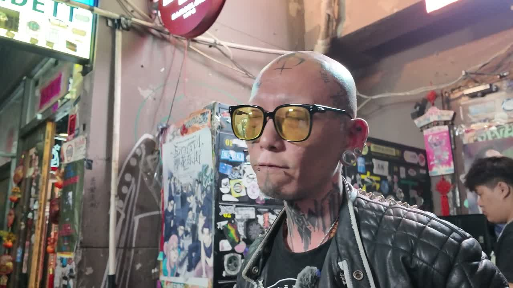
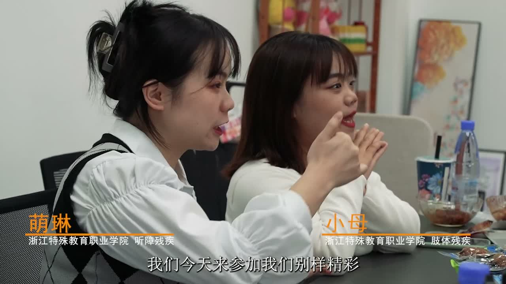
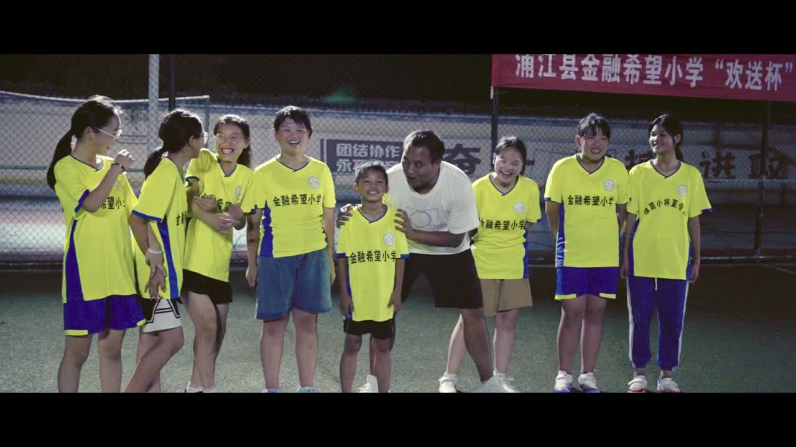
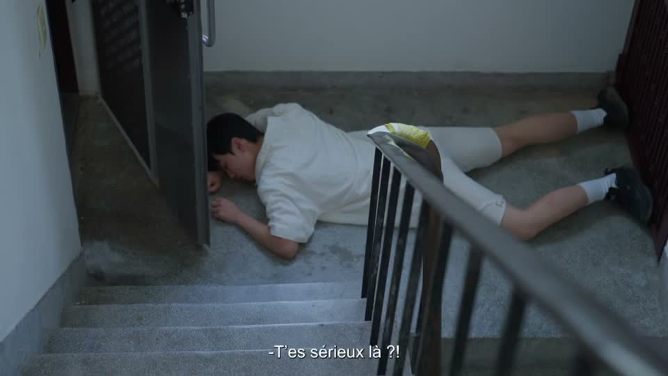
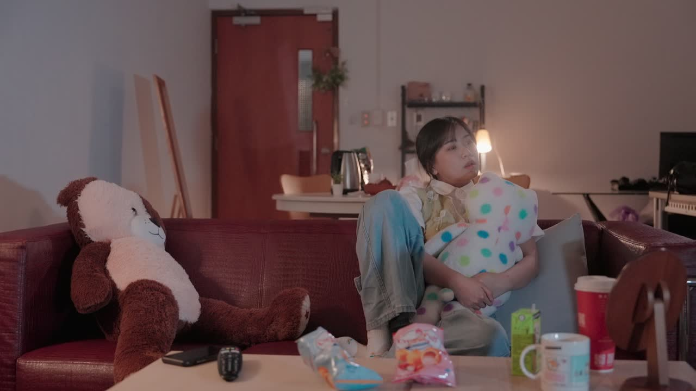
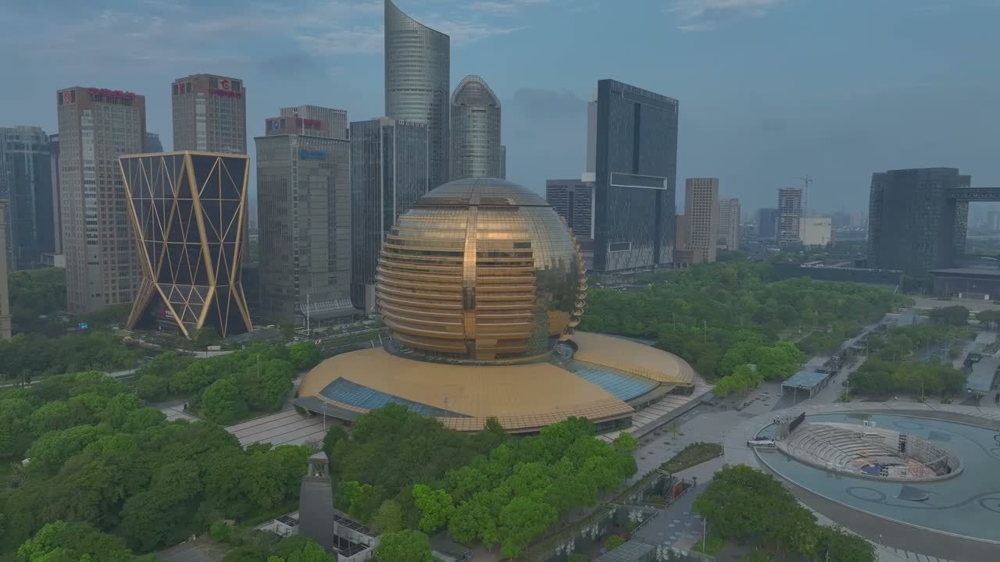
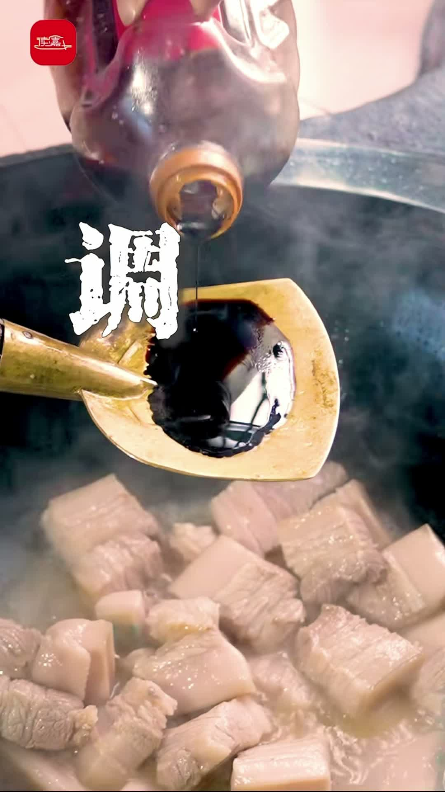
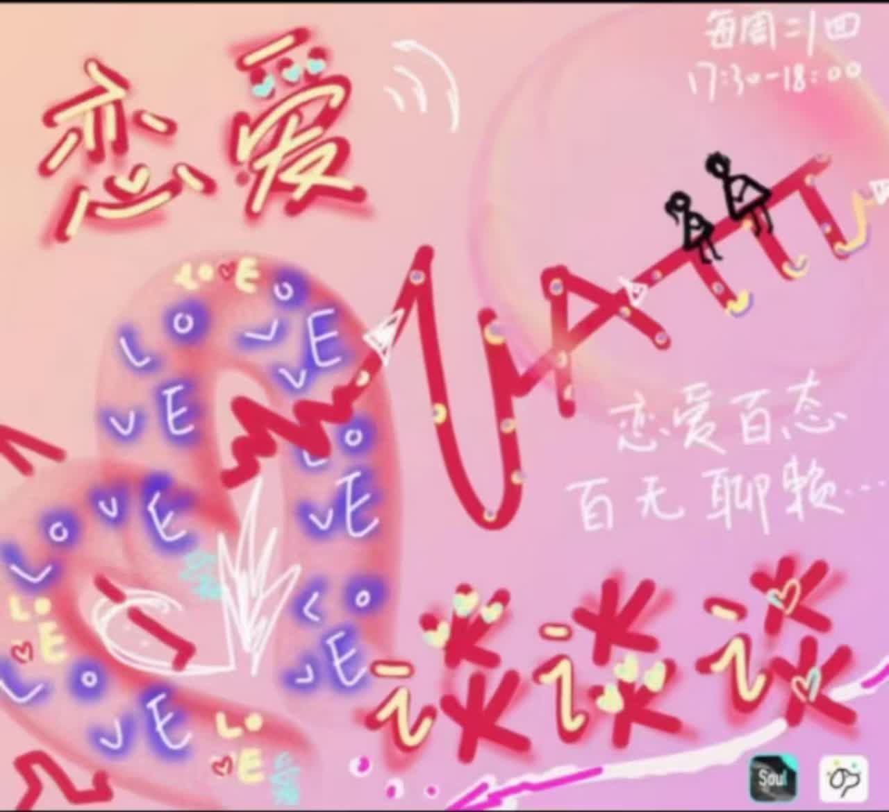

纪录 · 概念片 1′11″01
无常行者 · 朋克去朝拜
导演 / 摄影 · 2026
纪录长片《无常行者：纹身与佛光》的概念影像。四十岁的朋克、厂牌主理人，也是虔诚的佛教徒，他准备用磕长头的方式，从北京一路去拉萨。
中国传媒大学新闻与传播硕士，浙江传媒学院广播电视学本科，台湾艺术大学电影学系交换。导演、编导、制片都在做——因为一个片子从选题到交付，我想全程在场。

纪录 · 概念片 1′11″纪录长片《无常行者：纹身与佛光》的概念影像。四十岁的朋克、厂牌主理人，也是虔诚的佛教徒，他准备用磕长头的方式，从北京一路去拉萨。

微纪录片 3′59″浙江特殊教育职业学院的两位残障主播，把镜头对准自己。他们不想要同情，只想被正常地看见。

大山深处的一所希望小学，足球是孩子们去往城市的一道「窄门」。几个孩子，几种家庭，一个夏天。

独立短片 3′40″与中、法、韩、瑞典创作者共同完成的独立短片，讲一个东亚家庭的告别。负责剧组搭建、演员招募、场地与器材统筹、拍摄通告与现场执行，并协助精剪。

剧情短片 7′11″台湾艺术大学电影学系交换期间参与的国际团队短片。两个人的一个下午，全片由一个长镜头完成，没有剪辑可以救场。
80 分钟人物纪录片提案。花臂纹身与佛前长头，反差背后是一个四十岁男人对信仰、争议与家人的回答。含项目概况、人物关系、拍摄脚本、影像风格与发行渠道。
从海外社媒的熊猫内容数据出发，完成竞品分析、内容使命、IP 人设与运营规划，为一隻由 AIGC 生成的熊猫设计可持续的账号体系与内容线。
以「出租男女友」为切口，讨论当代年轻人的亲密关系、被标价的情感与法律灰色地带。含选题缘起、田野方法与期中规划，四人小组共同完成。
以乌镇戏剧节十年为线索的数据新闻，梳理剧目、观众与城市之间的变化。小组作品，我参与选题、数据搜集与可视化排版。
前者为澎湃新闻视觉中心的多媒体专题，我负责策划与执行，获第十四届上海市摄影艺术展多媒体类金奖；后者为 AIGC 短片，我担任制作与后期，获北京大学第四届东亚古籍数字人文国际论坛优秀典藏活化奖。

航拍创意 2′18″以无人机为主视角完成的创意短片。城市天际线、圆形广场与水岸被同一条运动线串起来，节奏全在剪辑台上。

竖屏短视频 1′11″用「冲、割、抖、炒、调、翻」六个动词拆解一桌年夜饭。食物是年味的载体，动作才是节奏。

广播节目 16′36″校园情感谈话节目，手绘粉笔风格的视觉包装与声音设计，每周二、四 17:30 播出。从选题、台本到成片后期独立完成。
Adobe Premiere Pro、剪映；索尼 / 佳能相机、大疆稳定器与航拍机、Tricaster 导播系统与直播推流。华策影视后期制片助理任内，跟进剪辑、调色、声音与特效的整条流程，管理素材与成片版本归档。
站内是 20 秒预览片段。纪录长片与短片的完整版本、PDF 作品集与最新简历，分别放在下面两个地方，需要什么直接取。
在万达影业评估过四十余个剧本，在华策影视跟过后期的每一条时间线，也在片场做过制片主任和导演助理。这些经历让我在写提案时知道钱和周期在哪里，在拍摄现场知道人会出什么问题，在剪辑台上知道什么可以舍弃。